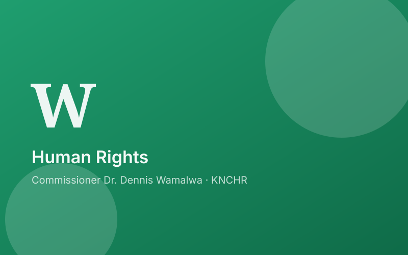

Strengthening Human Rights in Kwale County: A Groundbreaking Partnership

A Meeting of Minds
In an inspiring display of commitment to human rights, Kwale County recently became the focal point of a significant meeting. Dr. Wamalwa Dennis, a Commissioner at the Kenya National Commission on Human Rights (KNCHR), alongside fellow Commissioners and KNCHR Chairperson Roseline Odede, engaged in a fruitful dialogue with Governor Fatuma Achani of Kwale County. This wasn't just any meeting; it was a beacon of hope for the promotion and protection of human rights within the county.
Raising the Banner of Awareness
Central to the discussions was the imperative need to elevate awareness about human rights among the Kwale County populace. The collaborative effort aimed not only to enlighten the community about their fundamental rights but also to instill a culture of respect and tolerance. The vision? A society where everyone is aware of their rights and respects the rights of others.
Unity for a Common Cause
The meeting highlighted the potential for collaborative initiatives between KNCHR and the Kwale County Government. By joining forces, they plan to tackle human rights challenges head-on, with a focus on projects and programs that address these issues at their core. The synergy between these bodies promises to pave the way for impactful changes in the region.
Empowering Through Knowledge
A significant outcome of the dialogue was the emphasis on empowering local communities. Education and capacity-building initiatives are set to play a pivotal role in this empowerment process. The goal is to ensure that every individual in Kwale County not only understands their rights but also knows how to exercise them effectively.
A Pledge for Collaboration
Governor Fatuma Achani's commitment to work alongside KNCHR marks a milestone in the county's journey towards human rights advocacy. Together, they are set to develop strategic initiatives focused on critical areas such as gender equality, access to justice, and socio-economic rights.
Inclusive Growth Through Stakeholder Engagement
Recognizing the importance of inclusivity, the meeting underlined the need to engage a broad spectrum of stakeholders. Civil society organizations, grassroots movements, and community leaders are all being called upon to contribute to this noble cause. Their involvement is crucial in ensuring that the human rights agenda in Kwale County is comprehensive and far-reaching.
Looking Forward
The engagement between KNCHR and Governor Fatuma Achani signals a new chapter in the quest to safeguard and promote human rights in Kwale County and beyond. It stands as a testament to the power of collaboration and commitment in advancing the cause of human rights.
A Call to Action
As we reflect on the outcomes of this pivotal meeting, let us all be reminded of the role we can play in promoting human rights within our communities. Whether by staying informed, engaging in dialogues, or supporting human rights initiatives, every action counts. Together, we can make a difference in building a just and equitable society for all.
In the spirit of unity and shared purpose, KNCHR and Kwale County Government's collaborative efforts inspire us to advocate for the dignity and rights of every individual. Let's join hands in this noble endeavor and contribute to a future where human rights are not just protected but celebrated.